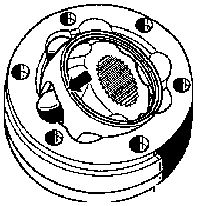

Constant Velocity Joint: Service and Repair
OUTER CONSTANT VELOCITY JOINT- The joint can be disassembled to replace the grease if very dirty, or for checking the balls and ball tracks for wear and damage.
Removing

- Mark position of ball hub in relation to ball cage and housing with electric scriber.
- Swivel ball track and ball cage.
- Remove each ball in turn.
CAUTION: Parts of constant velocity joints must not be interchanged.

- Turn cage until two rectangular openings -arrow-align with joint housing.
- Lift out cage together with hub.

- Swing segment of hub into rectangular opening of cage.
- Tilt hub out of cage.
- Check housing, cage and balls for pitting and signs of seizure.
NOTE:
- Excessive backlash in the joint will be noticed as a knock when changing from acceleration to overrun or vice versa.
- Replace the joint if necessary.
- Do not replace the joint because of a polished appearance or because ball tracks are visible.
Installing
- Press half the total amount of grease into the joint.
- Install cage together with hub into joint.
- Press in balls separately from alternate sides and ensure that original position of hub in relation to cage is restored.
- Install new circlip into groove.
- Distribute remaining grease in boot.
INNER CONSTANT VELOCITY JOINT
- The joint can be disassembled to replace the grease if very dirty, or for checking the balls and ball tracks for wear and damage.
Removing

- Swivel ball hub and ball cage.
- Press out joint in direction of arrow.
- Press balls out of cage.
CAUTION: Parts of constant velocity pints must not be interchanged.

- Tilt ball hub to position above ball tracks -arrows-and remove from cage.
- Check housing, hub, cage and balls for pitting and signs of seizure.
NOTE:
- Excessive backlash in the joint will be noticed as a knock when changing from acceleration to overrun and vice versa.
- Replace the joint if necessary.
- Do not replace a joint because of polished areas or because the ball tracks are visible.
Installing

- Insert ball hub over both chamfers into ball cage (any installed position is acceptable).
- Press balls into cage.
- Insert hub with cage and balls into joint at right angles.

NOTE:
- Ensure that a wide ball groove in outer ring -a- and a narrow groove in hub -b- are together on one side when hub is pivoted into outer ring.
- Chamfer on inside diameter of ball hub (splices) must face larger diameter of joint

- Swivel in ball hub with cage and balls in outer ring,
NOTE: Hub must be pivoted out of cage -arrows- until/ balls are spaced to fit grooves.

- Press cage firmly -arrow- until hub swings fully into position.
NOTE: The joint is correctly assembled when the ball hub can be moved in and out over the full range of axial movement by hand.